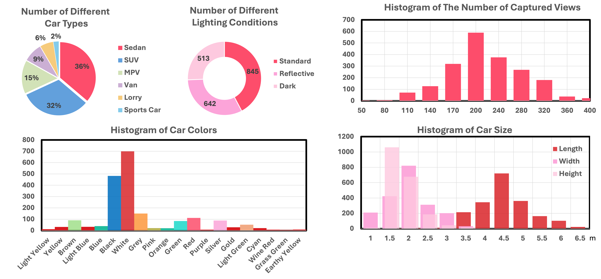

About
The advancement of 3D reconstruction techniques encourages researchers to reconstruct vehicles from large-scale self-driving datasets for the simulation of dangerous scenes, like vehicle accidents. However, the reconstructed 3D cars are typically low-quality and contain a mass of artifacts due to the lack of sufficient training views and low-resolution images. Therefore, a dataset, that can be used to reconstruct high-quality cars for the simulation of corner-case scenes, is imperative. In this paper, we collect the first large-scale 3D real car dataset, termed 3DRealCar, offering three distinctive features: (1) \textbf{High-Volume}: 2500 cars are meticulously scanned by 3D scanners to obtain their point cloud, representing their actual size in real-world scenes. (2)\textbf{ High-Quality}: Every car provides an average of 200 dense 360-degree views, enabling high-fidelity 3D reconstruction. (3) \textbf{High-Diversity}: The dataset contains a wide variety of car characteristics, with 6 different car types in more than 20 various colors. In addition, these cars are collected in three different lighting conditions, such as reflective, standard, and dark. For data preprocessing, we design a pipeline to remove background point clouds and rectify the car orientation of the point cloud for a unified axis, which ensures the reconstruction focuses solely on the car, facilitating more accurate 3D reconstruction and enabling the control of rendered views. We benchmark 3D reconstruction results with state-of-the-art methods for each task in 3DRealCar. Particularly, we find our dataset brings an insight that recent 3D reconstruction methods struggle to reconstruct 3D cars in two extremely lighting conditions, reflective and dark. Extensive experiments demonstrate that the standard lighting condition of 3DRealCar can be used to reconstruct high-quality 3D car assets, simulate photorealistic corner-case scenes, and improve downstream tasks. We hope this dataset will contribute to the development of 3D reconstruction and the advancement of car-related tasks. Our dataset is available here.
Distributions
Our dataset mainly contains six different car types. We also count the number of different lighting conditions on cars. the standard condition means the car is well-lighting and without strong specular highlights. The reflective condition means the car has specular highlights. Glossy materials bring huge challenges to recent 3D reconstruction methods. The dark condition means the car is captured in an underground parking and not well-lighting. The number of captured images per car is an average of 200. The number of views ranges from 50 to 400. Our dataset contains more than twenty colors, but the white and black colors still take up most of our dataset. In addition, we also show the distribution of car size, in terms of their length, width, and height.
Reconstructed Results
We show visualization in our dataset with recent state-of-the-art 3D reconstruction method, 3DGS (Gaussian Splatting). To the standard lighting condition, 3DGS is capable of reconstructing relatively high-quality 3D cars from our dataset. Note that this level of reconstructing quality is enough to be utilized and rendered for downstream tasks. However, the reflective and dark conditions results are not promising. Therefore, these two parts of our 3DRealCar bring two challenges to recent 3D methods.
The first challenge is the reconstruction of specular highlights. Due to the particular property of cars, materials of car surfaces are generally glossy, which means it would produce plenty of specular highlights if cars are exposed to the sun or strong light.
The second challenge is the reconstruction in a dark environment. The training images captured in the dark environment lost plenty of details for reconstruction. Therefore, how to achieve high-quality reconstruction results from these two extremely lighting conditions is a challenge to recent methods.
We hope these results can encourage subsequent research for the 3D reconstruction in awful conditions.